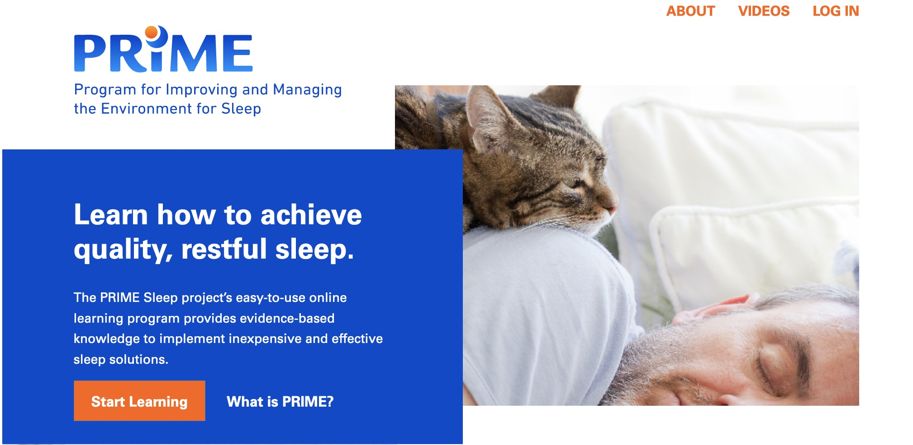

PRIME Sleep
Environmental and behavioral design changes for quality sleep at the end-of-life
Ithaca, NYRole: Research Project Manager
Up to 80% of individuals at end-of-life experience sleep disruption, severely affecting their quality of life and and that of their caregivers. The traditional treatment approach is pharmacological, and although medications can improve sleep, they frequently result in serious side effects such as delirium or an increased risk in falls. Treatments such as behavioral and environmental interventions have been shown to be safer and equally effective, but much of this research has yet to make its way into daily practice. The Program for Improving and Managing the Environment for Sleep (PRIME) seeks to train palliative care professionals to adopt these non-pharmacological approaches and improve patient quality of life.

In 2020, the first iteration of this training program was evaluated by palliative care staff (nurses, social workers, aides, chaplains, and managers) at two facilities in upstate New York. Our team sought to uncover the following:
- How much prior knowledge, if any, did staff have with these behavioral and environmental interventions?
- Was our knowledge tranlsation approach successful? Was the material too advanced or too simplistic?
- What barriers, if any, did staff foresee in implementing these new approaches?
- How likely were staff to begin using one or more of these new treatments after completing these educational modules?
The study of 31 professionals was completed in 2020 and showed broad support for the program. Results of the study have been published in BMC Palliative Care , and work continues on testing new versions of the educational materials for non-professional caregivers (e.g. family) for use at home.